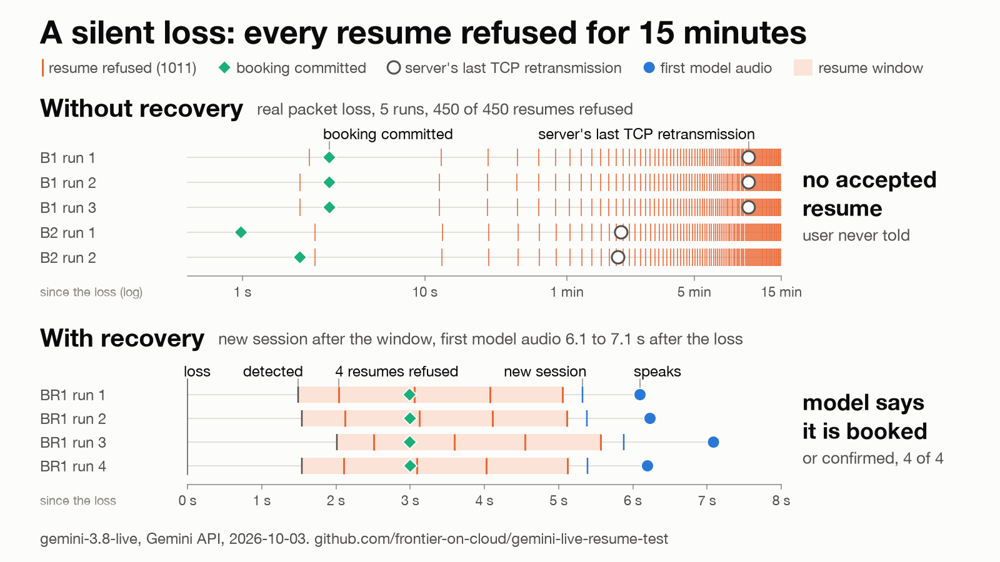

Frontier on Cloud › Tests › gemini-live-resume-test
A pending tool call across a lost connection and session resumption
- Model
gemini-3.8-live- Endpoint
- Gemini Developer API with an API key. Not Vertex AI.
- SDK
google-genai2.25.0 withwebsockets16.1.1, Python 3.13- Runs
- 2026-10-02 evening and 2026-10-03 morning
- Sessions
- 43 in four rounds, 1 to 4 runs per scenario, plus 2 runs of the one-file reproduction
- Repository
- frontier-on-cloud/gemini-live-resume-test (MIT), numbers at
687b1af - Report to Google
- google-gemini/gemini-live-api-examples#60, opened 2026-10-03 with the one-file reproduction
- Series 2 post with the clip (2026-10-03)
Question
A voice session's WebSocket connection is lost while a side-effecting tool call is pending. Can the client resume the session with its resumption handle and deliver the result, and does the user hear the truth about the booking? None of the Gemini API or Google Cloud pages read on 2026-10-02 says what happens to a tool call pending at a disconnect, how soon a resume can succeed, or which errors a resume can return.
Setup
- The user says "Book me the 3pm slot tomorrow, please.", the model calls
book_slot, and a fake backend takes 4 s (7 s in some scenarios) to commit. The connection is lost before the result reaches the model. The client tries to resume with its handle, sends the result, and asks "Did you book it?". The answer is compared with what the backend actually did. - Speech input: macOS
say, voice Samantha, 16 kHz PCM, 100 ms chunks in real time. - The client detects a loss with its own WebSocket pings, one every 0.5 s, and declares the connection lost after 2 s without a frame or a pong.
| Round | How the connection is lost | Sessions |
|---|---|---|
| 1 | The client aborts its own TCP connection, so the server sees it close | 17 |
| 2 | An application-level freeze: a local proxy stops forwarding bytes and closes nothing | 9 |
| 3 | Real packet loss: iptables drops the flow both ways in a Linux container, nothing is closed | 6 |
| stage 2 | Round 3's packet loss, with a client-side recovery (recovery.py) | 11 |
Results
1. A pending tool call survives a resume that works
In all 14 runs that had a pending call and a successful resume, the resumed session accepted the FunctionResponse for the call id issued before the drop. The server never re-issued the call, never sent toolCallCancellation, and returned no error. There was exactly one booking per run. The call stayed answerable for as long as the session could be resumed: 154 s after it was issued in round 2, 83.6 s in round 3.
If the client does not send that response after the resume, the model stays at "in progress". In 3 of 3 such runs it answered "Did you book it?" with an in-progress sentence ("I'm booking the 3 pm slot for you now." in run 1), 2.9 to 3.1 s after the booking had committed.
2. The immediate resume after an idle drop is refused, and works about 1.5 s later
Round 1, where the client aborts the connection and the server sees the close:
- with the model idle at the drop, a resume sent at once was closed with
1011 Internal error encountered.in 12 of 12 runs, 472 to 704 ms after it started; - a resume about 1.5 s after the drop worked in 12 of 12 (a retry 1 s after the refusal in 11 runs, a single attempt at 1.6 s in 1);
- a clean WebSocket close instead of an abort changed nothing (1 of 1);
- when the model was speaking at the drop, the immediate attempt worked (3 of 3).
From the drop to the resumed setupComplete: 2.0 to 2.3 s after an idle drop (n=12), 0.5 to 0.6 s after a drop during speech (n=3). Each connection received exactly one sessionResumptionUpdate, right after setupComplete, and none later.
3. After a silent loss, every resume is refused while the server holds the old connection
A silent loss is what a phone sees when it drops off Wi-Fi: packets stop, and no close frame, FIN or RST reaches the server. The client detected it 1.5 to 2.0 s after the loss.
- Application-level freeze (round 2). 40 of 40 resume attempts, from 1.8 s to 133 s after the loss, were refused with the same
1011. In a long probe (N=1) nothing worked for 12.8 minutes; the server closed the frozen connection with1011after about 8 minutes, and the handle did not work after that either. - Real packet loss (round 3). 450 of 450 attempts, made at detection and then every 10 s, were refused with
1011for the whole 15 minutes tried (last attempt at +892 s), in 5 of 5 runs. None hung. With the model idle, the server sent nothing at all for 479 s: no WebSocket ping, no TCP keepalive. With unacknowledged data in flight, its TCP gave up retransmitting after about 2 minutes, and the session stayed locked anyway. - Closing the old connection unlocks it at once. Once the path came back and the client closed the old connection (close 1000, echoed by the server), the next resume worked 0.5 to 0.6 s later (6 of 6 across rounds 2 and 3). The path coming back was not enough (N=1): with the old connection open again and carrying traffic, attempts were still refused until the client closed it.
In every silent-loss run the booking committed 1 to 3 s after the loss. In the runs where the old path never came back, the user was never told.
4. Client-side recovery (stage 2)
recovery.py is a reference pattern for that case. On a detected loss it tries to resume for 4 s (an attempt at detection, then one per second) and sends a close on the old socket in parallel. If no resume is accepted, it opens a new session without a handle and restores the conversation with one send_client_content: the last turns of the client's own transcript, plus a "System note" with one status line per side effect, taken from the backend, not from the model. The old call id is never answered. A call the model issues again is deduplicated by business key and answered from the existing job.
- 9 of 9 recovered runs answered "Did you book it?" correctly, with one booking each. The resume window never helped here: 36 of 36 attempts were refused.
- With the status note, the model's first sentence already said the booking was made ("Of course, your 3:00 p.m. slot for tomorrow has been successfully booked.") and it never re-issued the call (0 of 7). Without it (N=2), the model re-issued
book_slotin 2 of 2 runs; the dedupe kept that from becoming a second booking, but its first sentence still announced a booking in progress ("I'm booking the 3:00 p.m. slot tomorrow for you."). - From the loss to the first audio of the recovered session: 6.1 to 7.1 s. That is detection 1.5 to 2.0 s, the resume window 3.55 to 3.6 s (the largest share), the new session's setup 0.25 to 0.32 s, and the first audio 0.76 to 1.2 s after the restore.
- A plain resume loop without the fallback (one attempt per second for 60 s, N=2) got 118 refusals out of 118 and never told the user.
- The close sent on the old socket at detection never left the client: on a dead path it costs nothing and does nothing.

results/figures/lockout.png, drawn by make_figure.py from the JSONL.Other findings
- Transparent mode and
lastConsumedClientMessageIndexare not available on the Gemini Developer API: the SDK refusestransparentin this mode, and the server closes the setup with1007when it is sent anyway. - No
goAwayarrived in any session, including a frozen connection held for 12.8 minutes, which the server ended with a1011close instead. - The handle issued before the user spoke still restored everything up to the drop.
The clip
af_heart, a voice of the open-weight Kokoro-82M text-to-speech model, sent as real input. Without recovery (B1 timing, the resume loop stopped 60 s after the loss): 6 of 6 resumes refused with 1011, one booking, the model silent after its tool call. Shown in real time to 9.3 s, then compressed ×4, marked on screen. With recovery (BR1 timing): 4 refusals, a new session 3.75 s after detection, first model audio 6.57 s after the loss, one booking, no re-issued call, a correct answer. From results/clip/lockout-recovery-v2.mp4, drawn by make_clip.py.One-file reproduction
repro_resume_lockout.py (179 lines, google-genai 2.25.0 and python-dotenv only) shows finding 3 on a laptop, without Docker or root. It embeds a small HTTP CONNECT proxy that can freeze its tunnel, routes only the first connection through it, freezes the tunnel after one text turn, and tries to resume every 5 s. As a control it then unfreezes the tunnel, closes the first connection cleanly, waits 2 s, and tries once more. Two runs on 2026-10-03, macOS: 12 of 12 attempts refused with 1011 while frozen in each run (+5 to +60 s, 510 to 676 ms and 497 to 665 ms per refusal); after the clean close, resume setupComplete after 582 ms and 543 ms. This is the reproduction in the report to Google.
What a client must do
These follow from the measurements. They are not guarantees from the API.
- Keep your own ledger of tool calls by call id, across connections. After a resume, send the result for the old id, even if the side effect finished during the gap.
- Retry a refused resume. A
1011right after an idle drop is not a dead handle: wait about 1.5 s or retry after 1 s. Keep the handle you have; only one arrives per connection, and it restores the latest state. - Detect the loss yourself with WebSocket pings. An idle healthy connection carries no server frames for many seconds, and the server never pinged the client.
- Get a close to the server when you can. If the path comes back, close the old connection before resuming; that is what unlocks the session.
- Put a short cut-off on resuming and fall back to a new session. After a silent loss on a path that does not come back, the session stayed locked for the full 15 minutes tried.
- In the new session, restore the status of each side effect from your backend, not only the transcript. Without it the model re-issued the call and announced a booking that was already done.
- Deduplicate side effects by business key, in the new session too. A re-issued call has a new id, and only the business key ties it to the old one.
- Do not count on transparent mode or
lastConsumedClientMessageIndexon the Gemini Developer API. Buffer anything you need to replay yourself. - Do not wait for
goAway. - Expect speech cut by a drop to be partly repeated after a resume.
Caveats
- Small N: 1 to 4 runs per scenario. One network path, one model, the Gemini Developer API only (not Vertex AI), two days.
- Synthetic speech (macOS
say, one voice, digital silence between utterances; the clip sessions use Kokoroaf_heart) and a fake in-process booking backend. - Round 2's freeze is application-level: the proxy's kernel still acknowledges and answers TCP probes. Round 3 removes that caveat with real packet loss, but through Colima's vzNAT and three packet-level NATs, on one home connection.
- In round 3 the client drops its own outgoing packets with iptables, so its socket runs the probe timer instead of the retransmission timer. The server side sees a dead peer either way.
- The server's 53-byte segment at +479 s is read as a close frame from its size and timing, which match the close decoded in round 2. TLS was not decrypted.
- Stage 2 used one wording of the status note. The commit always landed inside the resume window, so the "still being processed" path was tested offline only. In 9 of 9 runs the question came before the restore reply had finished playing; a client that drops queued audio on
interruptedwould have cut part of that reply. The gap uses a playback model (24 kHz, back to back from arrival), not real audio output. - Not tested: replaying speech spoken during the gap, a second loss after a fallback, opening the new session in parallel with the resume attempts, a path that comes back after the server's own close, how many lost sessions the server holds at once, long sessions with
goAway, a real device switching networks.
Source and reproduce
| Commit | Date | Contents |
|---|---|---|
687b1af | 2026-10-03 | The harness, the 43 sessions, FINDINGS.md, the one-file reproduction |
a2bc678 | 2026-10-03 | The lockout figure, the first clip (macOS voice), one recorded recovery session |
85a9bf8 | 2026-10-03 | The clip re-recorded with the af_heart user voice (the clip above) |
The detailed record, with the method, every table, verbatim transcripts and the limits of each round, is FINDINGS.md. results/summary.md is generated from the JSONL by make_summary.py. No resumption handle is stored anywhere in the results.
cp .env.example .env # then set GEMINI_API_KEY in .env
uv run repro_resume_lockout.py --seconds 60
uv run resume_test.py --scenario R1 -n 3 --results-dir out/r1The first two commands rerun the lockout on a laptop. The third reruns one round 1 scenario; the README lists the commands for every round. Rounds 3 and stage 2 need more than three commands: a Linux container with NET_ADMIN, under Colima started with --network-address --network-preferred-route, and each B1 and B2 run lasts 15 minutes. Offline checks, no key: uv run test_freeze_proxy.py; uv run test_recovery.py.